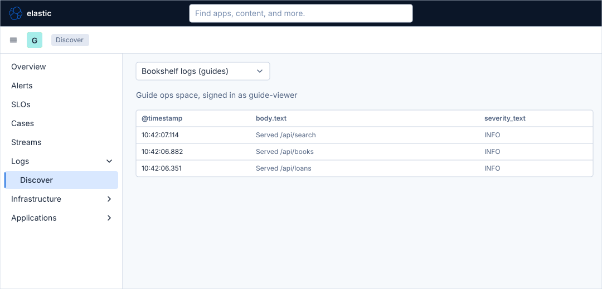
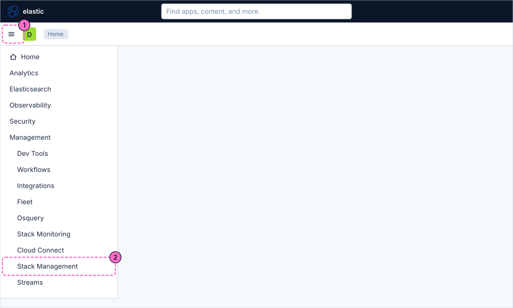
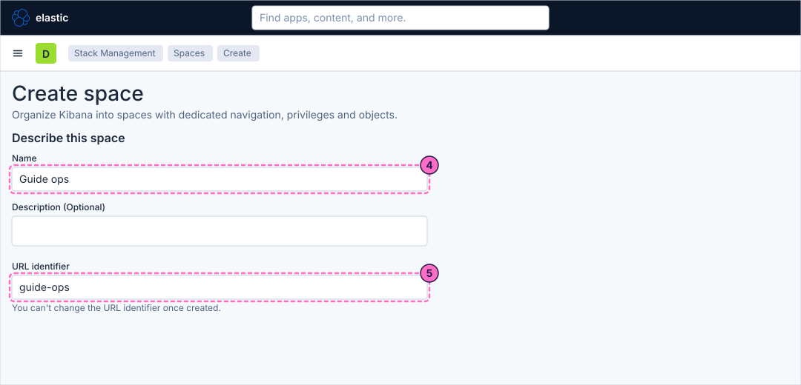
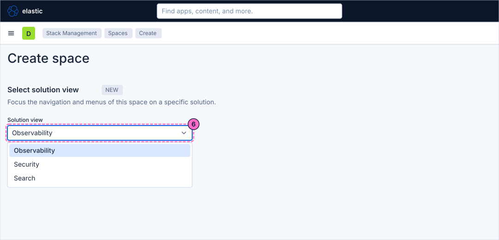
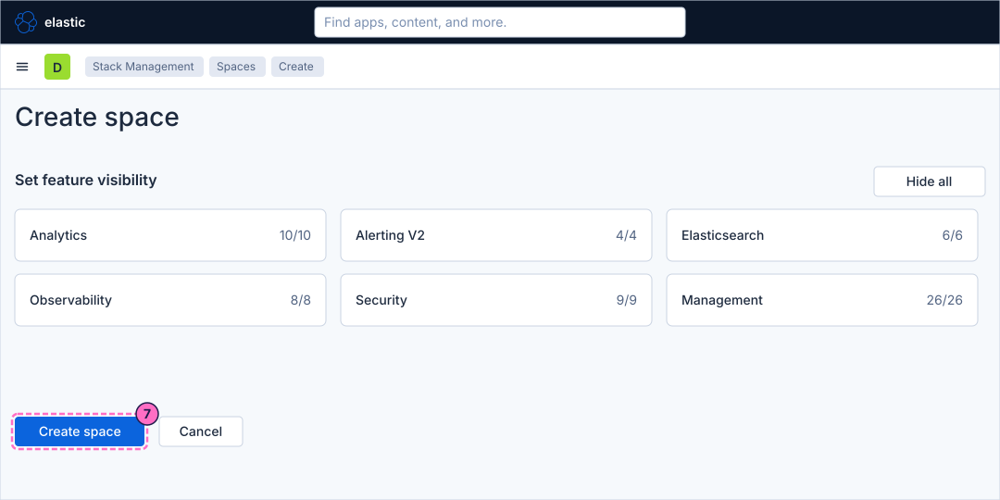
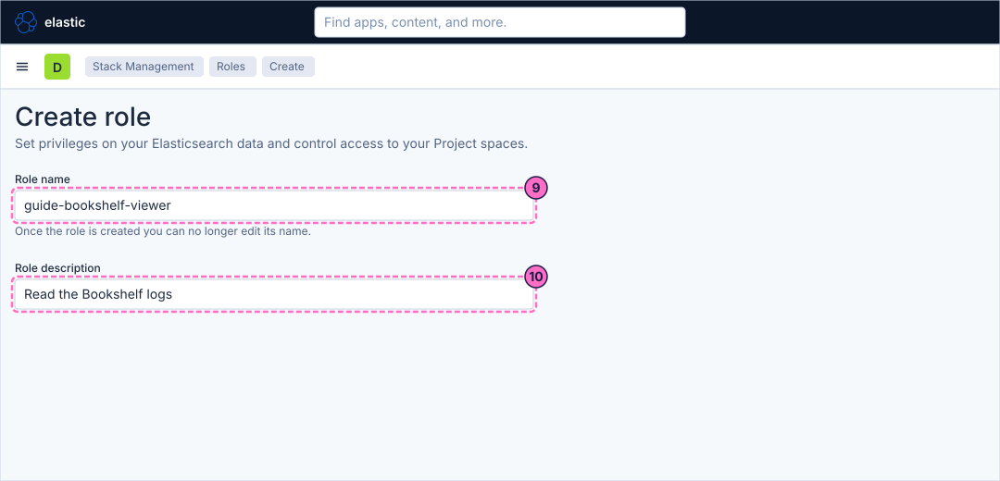
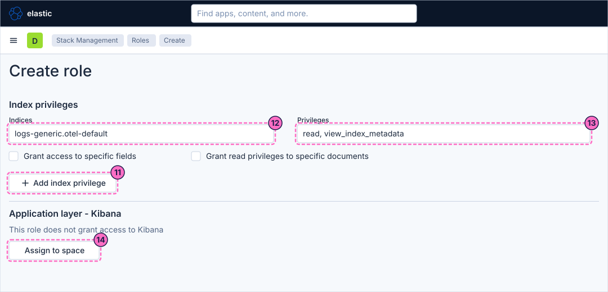
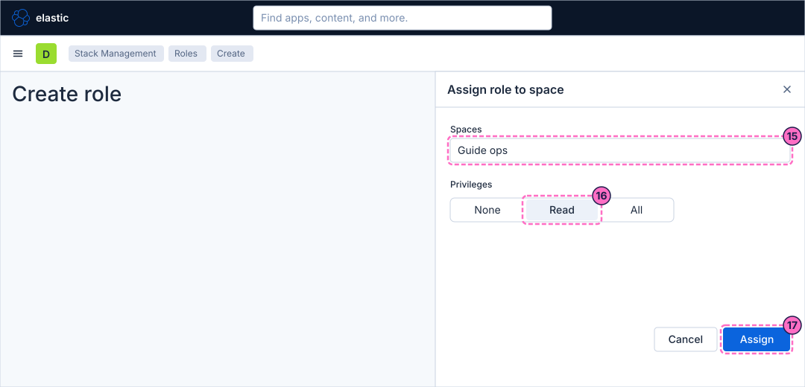
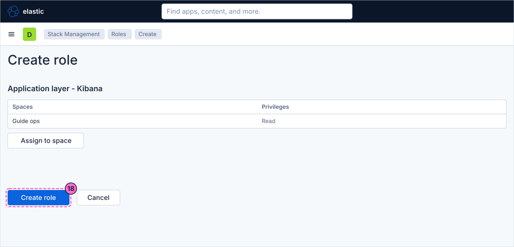
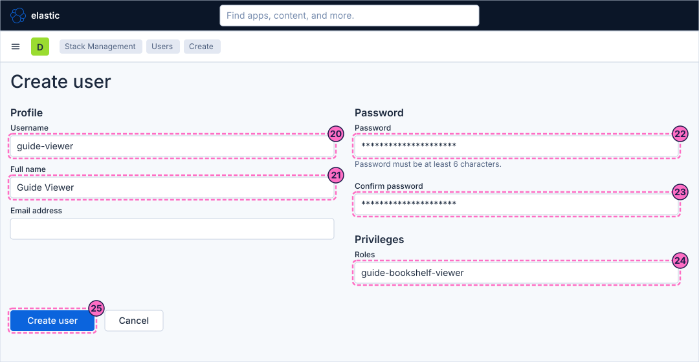

Kibana Guide: Spaces, Roles and Users
|
This content was generated with the assistance of AI and should be verified against the official documentation before being relied on in production. |
Checked on 2026-11-11 against Kibana 9.5.x.
What you build
You split the lab into a separate working area. You create a space called Guide ops whose navigation is focused on Observability, a role guide-bookshelf-viewer that can read the Bookshelf log index and has read access to that space, and a user guide-viewer with that role. After you sign in as that user, you see only the space and the data you granted.

Before you start
-
Start the Kibana profile of the hands-on lab and wait about a minute:
cd lab docker compose --profile kibana up -d -
Open http://localhost:5601 and sign in as
elasticwith the passwordlab-elastic-password. When Kibana opens its full-screen welcome page, click Explore on my own. -
Do the previous guide, Tour of the Observability apps, and the guide that creates the data view, Upload a file and create a data view. The last steps use the data view Bookshelf logs (guides).
-
Spaces are included in every licence, and so are roles and users of the built-in realm; the lab runs a trial licence anyway. Roles and users need a user with the
superuserrole, which is theelasticuser of the lab. -
The guide was checked on Elasticsearch and Kibana 9.5.6. The figures are drawings of the Kibana 9.5 user interface, not screenshots, so small details can differ from your screen. The choices of the solution view, the Assign to space flyout, the Saved objects list and the account menu are drawn generically; look for a control by its name when it is not where a figure shows it. A highlighted box with a number marks the control of the step with the same number.
Steps
The guide works in Stack Management, in the pages Spaces, Roles, Users and Saved objects, and ends in a second browser session. Use a private window or a second browser profile for the last phase if you want to keep the elastic session open. A space has its own saved objects, so the guide copies the data view into the new space.
Create the space
-
Click the menu button (Toggle primary navigation) at the left of the second bar.
-
Under Management, click Stack Management.

-
In the menu of Stack Management, under Kibana, click Spaces, then click the button that creates a space. The page Create space also opens directly at http://localhost:5601/app/management/kibana/spaces/create.
-
In the section Describe this space, type
Guide opsin Name. -
Check that URL identifier reads
guide-ops. Kibana fills it from the name, and it cannot be changed once the space exists; edit it now if it differs.
-
In the section Select solution view, open the select Solution view and choose Observability. The space then shows the navigation of the Observability solution only.

-
Leave Set feature visibility as it is. Every group (Analytics 10/10, Alerting V2 4/4, Elasticsearch 6/6, Observability 8/8, Security 9/9 and Management 26/26) stays fully visible. Click Create space.

Create the role
-
In Stack Management, under Security, click Roles, then click the button that creates a role. The page Create role also opens directly at http://localhost:5601/app/management/security/roles/edit.
-
Type
guide-bookshelf-viewerin Role name. The name cannot be edited once the role is created. -
Type
Read the Bookshelf logsin Role description.
-
In the section Index privileges of the data layer (Elasticsearch), click Add index privilege.
-
In Indices, type
logs-generic.otel-defaultand press Enter. -
In Privileges, choose
readandview_index_metadata. The first lets the user search the index, the second lets Kibana read its field list for a data view. -
In the section Application layer - Kibana, which says "This role does not grant access to Kibana", click Assign to space.

-
In the flyout that opens, choose the space
Guide opsin Spaces. -
Choose the privilege
Readfor the Kibana features of the space. -
Confirm with the button at the bottom of the flyout (Assign).

-
The section Application layer - Kibana now lists the space
Guide opswith the privilegeRead. Click Create role.
Create the user
-
In Stack Management, under Security, click Users, then click the button that creates a user. The page Create user also opens directly at http://localhost:5601/app/management/security/users/create.
-
In the section Profile, type
guide-viewerin Username. -
Type
Guide Viewerin Full name. -
In the section Password, type
guide-viewer-passwordin Password. The password must be at least 6 characters. -
Type the same password in Confirm password.
-
In the section Privileges, choose the role
guide-bookshelf-viewerin Roles. -
Click Create user.

Check the result
Kibana opens in the space Guide ops with the navigation of the Observability solution: Overview, Alerts, SLOs, Cases, Logs, Infrastructure and Applications. Open Logs → Discover and choose the data view Bookshelf logs (guides): the log records of the lab appear, because the role reads logs-generic.otel-default. Then check what the user cannot do: Stack Management does not offer Roles or Users to this user, and a request to open http://localhost:5601/app/management/security/users/create is refused.
If Discover shows no records, force some traffic and widen the time picker to Last 1 hour:
curl -X POST localhost:8090/mode/failingRestore normal traffic afterwards:
curl -X POST localhost:8090/mode/normalVariations
-
Create a role without the index privilege and with the Kibana privilege Read only: the user opens Discover but sees no data.
-
Hide a feature in Set feature visibility when you create or edit the space, for example Machine Learning under Analytics, and its entry disappears from the navigation of the space for everyone.
-
Assign the same role to several spaces, with a different privilege in each, from the Assign to space flyout.
What can go wrong
| Symptom | Cause | Fix |
|---|---|---|
The space shows the classic navigation, not the Observability one |
The solution view of the space was left on its default when the space was created. |
Edit the space in Spaces, choose Observability in Solution view, and save. |
The user signs in and Kibana reports that there is no access |
The role has no Kibana privilege on a space, or the user has no role. |
Open the role and check Application layer - Kibana, then open the user and check Roles. |
Discover offers no data view |
The data view lives in the Default space and was not copied to Guide ops. |
Copy Bookshelf logs (guides) to the space from Saved objects, or create a data view in the space with an account that may manage data views. |
Discover shows the data view but an error about the index |
The index privilege is missing or names another index. |
Check Indices and Privileges in the role: |
Clean up
The guide creates a space, a role and a user in the lab. To remove them, sign in again as elastic and open Stack Management: delete the user guide-viewer in Users, the role guide-bookshelf-viewer in Roles, and the space Guide ops in Spaces. Deleting a space also deletes the saved objects inside it, such as the copy of the data view. Stopping the profile with docker compose --profile kibana down -v removes all of them with the volumes.
Where to go next
-
Previous guide: Tour of the Observability apps.
-
Next guide: Console, which sends requests to Elasticsearch and to the Kibana API from Dev Tools.
-
Reference: Spaces, roles and privileges covers spaces, roles, feature privileges, API keys and the other ways to grant access in full.